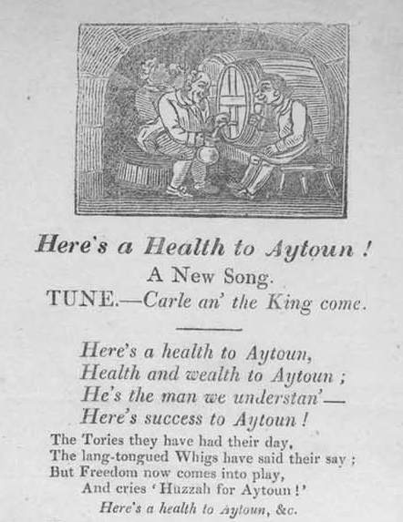

Carl, an the King Come
Ah, que le roi vienne!
Text (partly?) by Robert Burns
Tune - MélodieOlder version
Sequenced by Christian Souchon
Sheet music- Partition
|
To the tune:
The tune was exceedingly popular in the eighteenth century. It was directed to be set to his poetry by Allan Ramsay (1648 - 1758): - in his opera "The Gentle Shepherd" , for the song N°9 " Peggy, now the King's come", published 1725, which is on the same page of the Museum as "Carl, an the King come" (see note below); - in verses entitled "The promised Joy", in the first volume of the "Musick for the Scots songs in the Tea-Table Miscellany", 1726. It is in most of the best collections of Scottish music, including: - James Oswald's (1710 - 1769) "Caledonian Pocket Companion", vol.4, 1754; - William McGibbon's (c. 1690 - 1756) "Collection of Scots Tunes", book I, 1742, and - Neil and Nathaniel Gow's "Complete Repository" - Part 4, 1817, published as a Scottish Air. In one of the older versions, the second part is similar to the tune "Battle of the Boyne" . Source "The Fiddler's Companion" (cf. Links). |
A propos de la mélodie:
Cet air était extrêmement populaire au 18ème siècle. La mélodie est citée par Allan Ramsay (1648 - 1758): - dans son opéra "Le bon berger" , paru en 1725, où il accompagne le chant N°9 "Peggy, le roi vient" qu'on trouve dans le "Musée" sur la même page que "Ah, que le roi vienne!" (cf. note ci-après) - dans un poème intitulé "La joie promise", au 1er volume de "Musique pour les chants écossais des Miscellanées de la table à thé", 1726. On le trouve dans la plupart des meilleurs recueils de musique écossaise, y compris ceux de: - James Oswald (1710 - 1769): "le Vadémécum du Calédonien", vol. 4, 1742; - William McGibbon (vers 1690 - 1756): "Recueil de mélodies écossaises", vol. 1, 1742, et - Neil et Nathaniel Gow: "Répertoire complet" - volume 4, 1817, où il prend la forme d'un "air écossais". Dans l'une de ces anciennes versions, la seconde partie ressemble à l'air "Bataille de la Boyne" . Source "The Fiddler's Companion" (cf. Links). |

|
1. Carl, an the King come, (bis)
Thou shalt dance and I wilt sing, Carl, an the King come! An somebodie were come again, Then somebodie maun cross the main, And every man shall hae his ain, Carl, an the King come! 2. I trow we swapped for the warse: We gae the boot and better horse, An that we'll tell them at the Cross [1], Carl, an the King come! When yellow corn grows on the rigs And a gibbet's built to hang the Whigs O then we will dance Scottish jigs, Carl, an' the King come! 3. Nae mair wi' pinch and drouth we'll dine, As we ha'e done - a dog's propine, But quaff our waughts o' bouzy wine, Carl an'the King come! Coggie, an the King come, (bis) I'll be fou, an thou'se be toom, Coggie, an the King come! [2] |
Mercat Cross of Edinburgh |
1. Ah, que le Roi vienne, (bis)!
A nous la danse et les chants! Ah que, le Roi vienne! Si jamais quelqu'un revenait, Qu'un autre la mer repassait, Chacun son bien recouvrerait! Ah, que le Roi vienne! 2. Bien sûr que nous perdons au change: Un baudet contre un étalon! Au "Mercat Cross" [1] nous le dirons! Ah que le Roi vienne! Que le blé blond pousse à son gré, Qu'aux Whigs on apprête un gibet, Pour que dansent les Ecossais! Ah que le roi vienne! 3. Finie la soif qui vous tenaille! Finis ces toasts dignes des chiens! A nous les lampées de bon vin! Ah, que le roi vienne! Tonnelet, qu'il vienne! (bis) Vide, quand je serai plein! Tonnelet, qu'il vienne! [2] (Trad. Ch.Souchon(c)2005) |
|
[1]
Cross
: In olden days, the Mercat Cross (market cross) in Scottish cities and towns was not only a place for the merchants to gather, but was also where public executions took place and where official proclamations were made. Nowadays, only the proclamations survive - such as, at the Mercat Cross in Edinburgh, declaring a General Election for Parliament or when a new monarch comes to the throne.
Despite the name the typical mercat cross is a pole or a pillar rather than a cross. Market crosses are also found in most market towns in England and even in Australia and Canada where they were erected by emigrants. The Edinburgh Mercat Cross is situated close to St Giles Cathedral. Although it was removed in 1756 and taken to Drum House, Prime Minister Gladstone (1809-1898), who was also the MP for Midlothian, was instrumental in returning the Cross to its original location in 1885. ******************************************************** [2] Concerning the 1853 edition of James Johnson's 'Scots Musical Museum' Volume III, commentator Stenhouse is the sole authority for the statement that Burns wrote only the second stanza, but nothing is known of any early song containing the first stanza. On the other hand, this collection quotes under song N° 239 page 248, chorus and verse 1 of the "old words" (in fact, from Allan Ramsay's opera "Gentle Shepherd" -see note to the tune) of the song: As in Robert Burns' version, the King's coming will be the cause of considerable improvements, even if a different king is meant. Peggy, now the king's come, Peggy, now the king's come, Thou may dance and I shall sing, Peggy, now the king's come. Nae mair the hawkies shalt thou milk, But change thy plaiding coat for silk, And be a lady of that ilk, Now Peggy, since the king's come. The king praised in this ballad-opera first performed in 1729, a year after "John Gay's "Beggar's Opera" , is Charles II. The story is about the restoration of a true order with that of the king and the return of Sir William, an exile who is said to "have wisely fled And left a fair estate to save his head". Now the time has come when he "Shall enjoy his ain" , while his enemies "Dare nae mair do't again" . These phrases echo two famous Jacobite songs. Hogg's "Jacobite Relics", Part I, N°23, 1819 has exactly the same version ("Carle, an the King come"), except for two additional half-stanzas (in italics) by no means harmonising with the rest in style. There is a note: "It is reported to be as old as the time of the Commenwealth, though with different words; but, like "The King shall enjoy his own again" , has always appeared as an auxiliary in the cause which first called it into existence." Hogg evidently ignores that the song contributed by a "Scots gentleman" was copied from the "Museum". ******************************************************** And here is the beginning of an endless "post-Burns" version written by Sir Walter Scott in August 1822 and published in a "broadside" on the occasion of the visit of King George IV to Scotland. The song "The Queen is coming" has a similar origin. CARLE, NOW THE KING'S COME.' BEING NEW WORDS TO AN AULD SPRING. THE news has flown frae mouth to mouth, The North for ance has bang'd the South; The deil a Scotsman's die o' drouth, Carle, now the King's come! CHORUS. Carle, now the King's come! Carle, now the King's come! Thou shalt dance, and I will sing, Carle, now the King's come! Auld England held him lang and fast; And Ireland had a joyfu' cast; But Scotland's turn is come at last Carle, now the King's come: Etc... ******************************************************** Alexander Rodger , a scathing anti-royalist poet answered with his own version that made Scott furious: Sawney (=Alexander), now the king's come, Sawney, now the king's come, Kneel and kiss his gracious --, Sawney, now the king's come. Tell him he is great and good, And come o Scottish royal blood. To yer hunkers, lick his fud, Sawney, now the king's come. ******************************************************** Here is another avatar of the song: It is used for political propaganda in a broadside ballad entitled 'Here's a Health to Aytoun' , probably published between 1830 and 1840. The Aytoun mentioned may be William Edmonstoune Aytoun (1813-65), a "Scottish poet who eventually worked for the University of Edinburgh, was renowned for his Tory views and especially for his support of the party during the Anti-Corn-Law struggle. Another possibility is that it refers to the Radical politician, James Aytoun, (1797-1881) who was active in Edinburgh at this time. " (Source:The Word on the Street, National Library of Scotland )
 |
[1]
Mercat Cross
: Autrefois, la "croix du marché" était, dans les villes écossaises, non seulement un lieu de rassemblement des marchands, mais aussi le théâtre d'exécutions publiques et une tribune pour les proclamations officielles. Seule cette dernière fonction a survécu - et c'est ainsi qu'au Mercat Cross d'Edimbourg, on proclame la convocation aux élections générales du Parlement ou l'accession au trône d'un nouveau monarque.
Comme son nom ne l'indique pas la "Mercat cross" typique est une colonne ou un pilier plutôt qu'une croix. Des croix de marché existent aussi dans beaucoup de bourgs anglais et même en Australie et au Canada où elles furent érigées par les émigrants. A Edimbourg, la "Croix du Marché" se trouve à côté de la cathédrale Saint-Giles. Bien qu'elle ait été enlevée en 1756 et transférée à Drum House, le premier ministre Gladstone (1809-1898), qui fut aussi le député du Midlothian, s'employa à faire remettre la Croix à son ancien emplacement. ******************************************************** [2] Concernant l'édition de 1853 du 'Musée musical écossais' de James Johnson , le commentateur Stenhouse est la seule autorité à affirmer que Burns n'a écrit que la seconde strophe. Mais on ne connaît pas d'autre chant contenant la première. En revanche, le volume III du "Musée" cite sous le N°239 page 248, le refrain et la première strophe des 'anciennes paroles' (tirées en réalité de l'opéra d'Allan Ramsay, le "Bon Berger" - cf. note à propos de la mélodie): Comme chez Robert Burns la venue du roi est pleine de promesses, même si le roi auquel on pense n'est pas le même. Peggy, maintenant que le roi est arrivé, Peggy, maintenant que le roi est arrivé, Tu peux danser et je vais chanter Peggy, maintenant que le roi est arrivé! Tu n'auras plus besoin de traire les vaches à face blanche Mais tu troqueras ta futaine contre de la soie, Et tu porteras le nom d'un domaine, Peggy, maintenant que le roi est arrivé! Le roi chanté par cet opéra en chansons donné pour la 1ère fois en 1729, un an après l'Opéra des Gueux de John Gay , c'est Charles II. Il y est question du retour d'un ordre véritable accompagnant celui du roi et de Sir William, un exilé dont on nous dit: "Qu'il a bien fait de fuir, laissant Un fort beau domaine et ses gens, S'il put au moins sauver sa tête." Le temps est venu où il va "recouvrer sa charge et son bien" , tandis que ses ennemis "Ne voudront point recommencer" . Ces phrases font écho à deux fameux chants Jacobites. Les "Reliques Jacobites", vol. I, N°23, 1819 présentent une version identique ("Ah, que le roi vienne"), mais contenant deux demi-strophes supplémentaires. (en italiques) dont le style dépare le reste. La version "Hogg" est assortie d'une note: "On dit que ce chant date de l'époque de Cromwell, avec des paroles différentes; mais, comme pour "Si le roi reprend sa charge" , ce chant n'a été utilisé que par le camp à qui il doit son existence." Hogg, de toute évidence, ignore que ce chant communiqué par un "monsieur écossais" était copié sur le "Musée". ******************************************************** Et voici le début d'une interminable version postérieure à Burns, composée par Walter Scott en août 1822 et publiée sur une "feuille volante" à l'occasion de la visite du Roi George IV en Ecosse. Le chant "La Reine vient" a une origine similaire. AMI, MAINTENANT QUE LE ROI EST VENU.' PAROLES NOUVELLES SUR UN AIR ANCIEN. La nouvelle se propage de bouche en bouche, Le nord pour une fois vole la vedette au sud; Le diable en chaque Ecossais meurt de soif, Ami, maintenant que le Roi est venu! REFRAIN. Ami, maintenant que le Roi est venu! Ami, maintenant que le Roi est venu! Tu danseras et je chanterai Ami, maintenant que le Roi est venu! La vieille Angleterre le gardait pour elle depuis longtemps; Et l'Irlande avait déjà eu la joie de le recevoir; Mais le tour de l'Ecosse vient enfin Ami, maintenant que le Roi est venu! Etc. ******************************************************** Alexander Rodger , acerbe poète antiroyaliste répondit par sa propre version qui mit Scott en fureur: Sawney (=Alexander), maintenant que le roi est venu, Sawney, vois: le roi est venu, A genoux et baise son --, Sawney, vois: le roi est venu,. Dis lui qu'il est bon, qu'il est grand Et roi Ecossais par le sang. Accroupissez-vous, lèche---!, Sawney, car le roi est venu. ******************************************************** Voici un nouvel avatar de ce chant: Il est utilisé à des fins de propagande politique dans une ballade imprimée sur une feuille volante ("broadside") intitulée "A la santé d'Aytoun" , probablement entre 1830 et 1840. L'Aytoun dont il est question peut être William Edmonstoune Aytoun (1813-65), "Un poète écossais qui termina sa carrière à l'université d'Edimbourg et qui connut son heure de gloire en raison de son engagement au côté des Tories dans la lutte contre la Loi sur les Céréales. Une autre possibilité est qu'il s'agisse du politicien radical James Aytoun (1791-1881) qui faisait alors parler de lui à Edimbourg." Source:The Word on the Street, National Library of Scotland ) A LA SANTE D'AYTOUN! Chanson nouvelle. MELODIE: - Ami, si le roi vient. A la santé d'Aytoun! Santé et richesse à Aytoun! Voilà un homme que nous comprenons.- Au succès d'Aytoun! Les Tories ont eu leur heure de gloire, Les Whigs à la langue bien pendue ont eu longuement la parole; Mais c'est la liberté maintenant qui entre en scène, Proclamant: "Hourra pour Aytoun! A la santé d'Aytoun, etc... |
|
des chants étudiés dans ELF JAKOBITENLIEDER IN GÄLISCHER SPRACHE un essai en allemand au format LIVRE DE POCHE 
de Christian Souchon |
zu der Abhandlung ELF JAKOBITENLIEDER IN GÄLISCHER SPRACHE einem deutschsprachigen TASCHENBUCH
von Christian Souchon |
is one of the songs studied in ELF JAKOBITENLIEDER IN GÄLISCHER SPRACHE presented in German as a PAPERBACK BOOK
by Christian Souchon |
Cliquer sur le lien ou l'image - Klicke auf den Link oder auf das Bild - Click link or picture for more info